One of the most daunting aspects of learning robotics is getting a grasp on the electronics. Although the subject matter is vast and can be highly technical, with some basic information, almost anyone can get electricity to work for them. Luckily for you, I am here to provide that information. All that is required is patience and a willingness to learn. Some of this information might not make sense right away, and that is okay. As you actually begin to build some bots, everything will start to become clear.
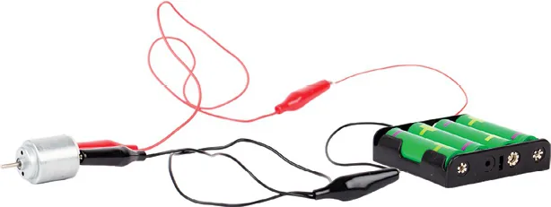
Batteries and Electricity
In this book, all of the electricity used will come from batteries. When you’re using a battery, remember that electrical current always flows between a voltage source and ground. You’ve likely noticed that batteries have a plus (positive) side and a minus (negative) side. By tradition, the minus side of the battery is the ground, and the plus side is the positive voltage.
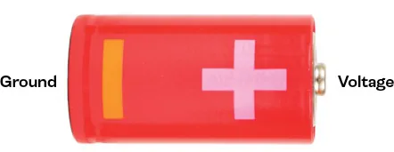
An electric charge can have two attributes: current (the amount of electric charge in a circuit) and voltage (the force by which the charge is flowing through the circuit). If you think of a circuit like a garden hose, the current is how much water is flowing through it, and the voltage is the force by which the water is being pushed through.
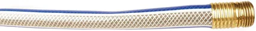
Typical cylindrical batteries, from AAA all the way up to D batteries, can provide 1.5 V of electricity. The difference between these batteries is not how much voltage they can provide but how much current they can provide. The larger the battery, the more current it can provide and the longer it will provide electricity.
Circuits
Now that you understand more about batteries, you may be wondering how to use them to power a circuit that uses a voltage higher than 1.5 V. The answer is simple: you connect the batteries in series to achieve higher voltages. This means placing the batteries end to end, where the positive side of one touches the ground side of the next. The voltage of all the batteries in the series is added together, so by connecting four 1.5 V batteries end to end, you can easily create a 6 V power source.
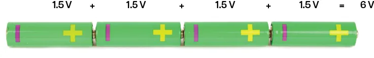
A battery holder is an enclosure designed to connect batteries in series. The more batteries in a battery holder, the higher the voltage. You can calculate the total voltage of a battery holder by multiplying the number of the batteries by 1.5.
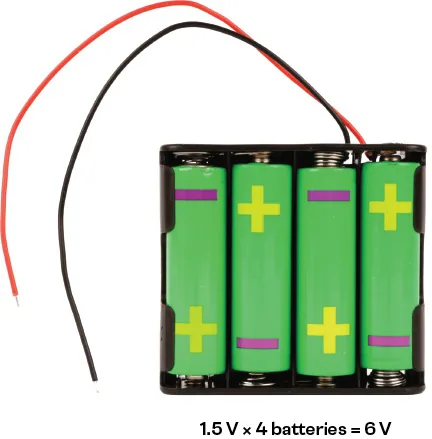
Wires
You can see that the battery pack has a red wire and a black wire coming out of it. In DC (direct current) electronics, the red wire from a battery pack is always the power connection, and the black wire is always the ground.
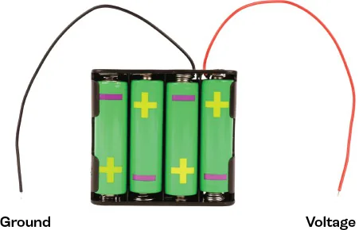
To connect a battery pack to anything else, you need a conductive wire. A conductor is material that easily lets electricity flow. For all the robot projects, you’ll be using insulated wire. An insulator is material that prevents the flow of electricity across it. By using an insulated wire with a conductive core, you can route electricity to the places it needs to go, without worrying about the wires touching and making incorrect connections.
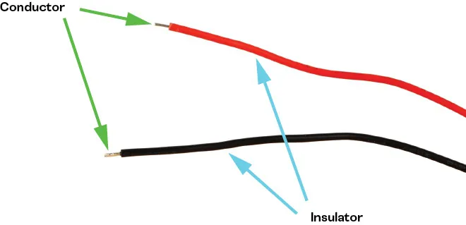
In order to use insulated wire, you need to strip off some insulation from the end of the wire. I find it’s best to strip off from 1/2 inch to 1 inch of insulation. Anything less may be challenging to work with, and anything more may expose too much wire and result in crossed connections.
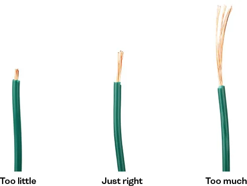
Test Leads with Alligator Clips
Test leads with alligator clips are great for temporarily making electrical connections between different electrical wires. To use them, press down on the back of the alligator clip, place whatever you are trying to grab onto its jaws, and release to clamp down.
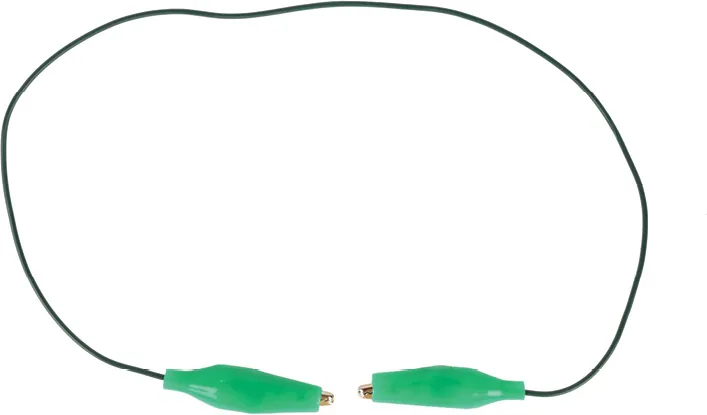
Alligator clips will be effective only if they are chomping down on a conductor.
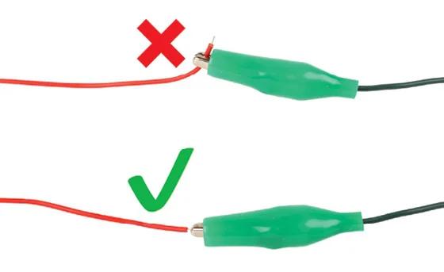
You can use test leads to connect a battery pack to different electronic components. If the components are connected in a way that allows electricity to flow between the power source and ground, you have created a circuit. A circuit is simply a complete path between power and ground.
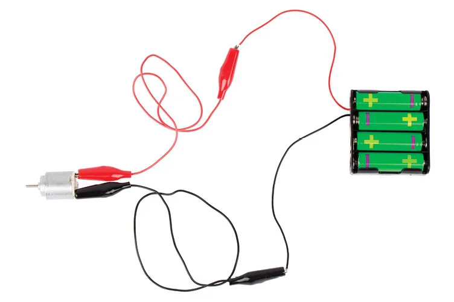
Short Circuits
If you decide you want to bypass all of the electronics and create the simplest of circuits by connecting two battery pack wires together (don’t), congratulations, you have just created a short circuit!
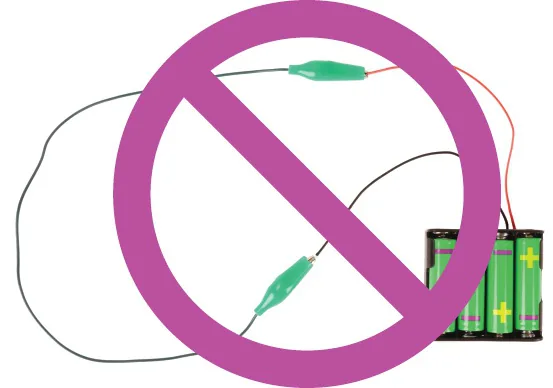
A short circuit is a circuit that does not have a load between the positive side of the circuit and the ground side of the circuit to use the energy. A load is basically anything that uses electrical energy.
When a battery’s positive voltage terminal is directly connected to the ground terminal, there is nothing to “use up” the energy that flows down the wire. With the electrons flowing only a short distance, they build up large amounts of heat. This causes the electronic components themselves to begin to heat up, melt, and possibly catch on fire, which is obviously a bad state of affairs. Check out this wire that melted during a short circuit:
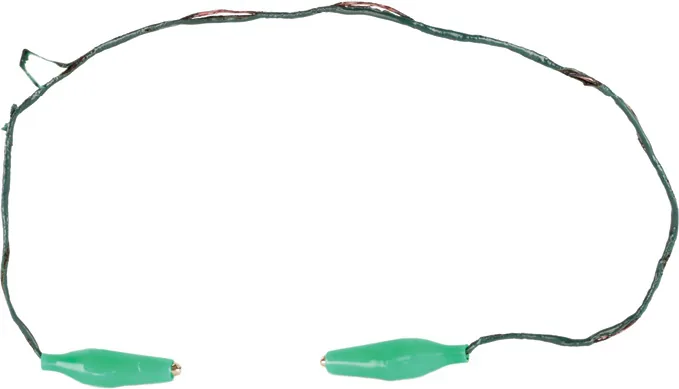
A very alarming hint that you have created a short circuit is seeing “magic smoke,” which appears suddenly and seems to flow mysteriously from inside your electric circuit. If you see this smoke, quickly disconnect the power.
It is important to always connect a power supply to a load. For the purposes of this book, the easiest thing to connect a power supply to is a motor. Motors use lots of energy.
Switches
To control the flow of power in a circuit, you’ll need a switch, which is a mechanical device that alternately breaks or completes an electrical circuit. A switch is literally two pieces of metal that are either touching each other (closed) or broken apart (open).
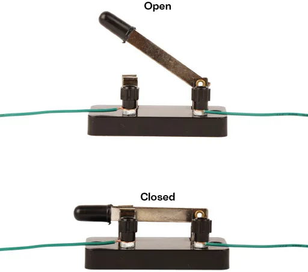
The most basic type of switch opens and closes one mechanical connection and controls one electrical circuit. This is called a single-pole single-throw (SPST) switch. The pole is the point where an electrical current enters the circuit, and the throw is a potential output point.
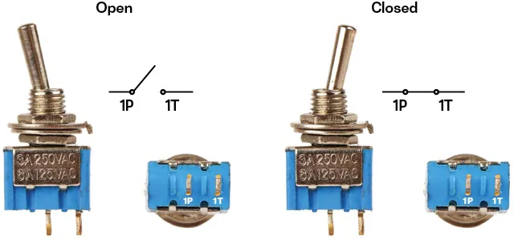
Switches with a single throw are easy to use because they have only one output, but a switch with more than one throw can have different outputs, depending on how it is toggled. For instance, a single-pole double-throw (SPDT) switch has a single pole to which a common connection is attached, but it has a double throw that allows it to toggle between two different output connections. When switched one way, it outputs toward its normally closed (NC) connection, and when toggled the opposite way, it routes electricity through its normally open (NO) connection.
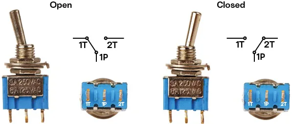
Some switches can even have more than one pole, such as the double-pole double- throw (DPDT) switch shown next. This switch is like having two separate SPDT switches combined together in one switch. Each pole is a separate electrical input connection, and each one toggles through two separate electrical outputs.
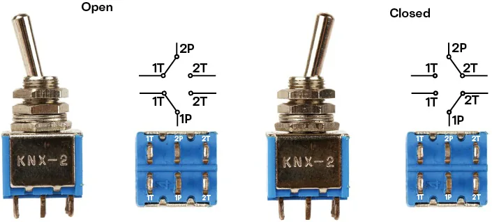
Other Switches
Thus far I’ve been describing toggle switches, which are activated when pushed back and forth. However, many types of switches exist that are triggered in many different ways. In this book, you’ll use a few different types of switches, including lever switches, reed (magnet) switches, and tilt switches.
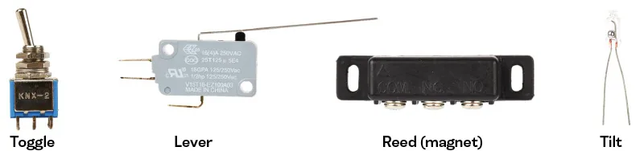
Switches are typically activated by some sort of physical input. However, a relay is a type of switch that is activated by an electromagnet. When the coil of an electromagnet is powered up, the switch inside the relay is engaged, and when power is released, the switch inside the relay goes back to its normal state. In Chapters 13 and 14, you’ll use relays to make some advanced circuits.
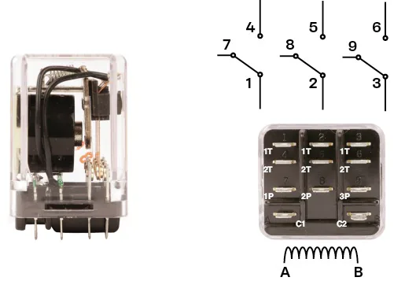
Series Circuits
As you learned earlier in the chapter, to have something in series means to connect it in a line, one after another. In this case, the power wire from the battery pack goes through the switch, then through the motor, and finally to ground.
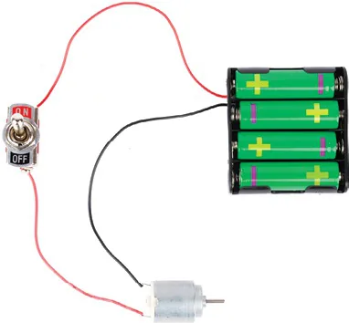
The power flows through each component in a series. If you were to break any of the connections in the circuit, as shown next, the power would turn off.
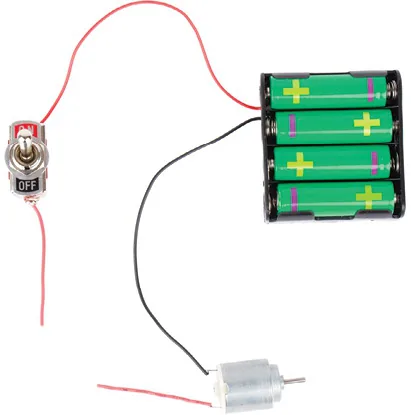
In the following circuit, the switch essentially serves the same function as disconnecting the wire. If the switch is toggled on, the connection is made and electricity is able to flow. If the switch is toggled off, the connection is disconnected, the series is broken, and no electricity can flow.
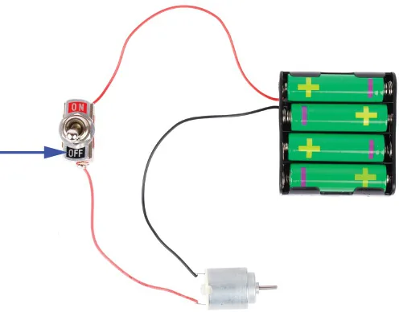
You can even wire two motors in series. However, you typically wouldn’t do this, because when voltage has to pass through two coils in series to get to ground, you end up reducing the speed of both motors by about half. Or, to put it another way, twice as much voltage is required to power two motors at normal speed if they’re connected in series.
Parallel Circuits
It is better to wire the motors in parallel. In a parallel circuit, the loads are wired side by side with electricity passing through both at once in order to get to ground. In this arrangement, they both spin at normal speed at their normal voltage, but they now are drawing double the amount of current from the batteries. This configuration is better because a battery pack can typically provide more current, but it can’t provide more voltage.
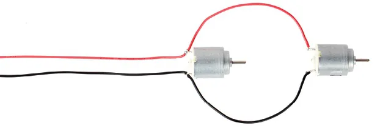
The other benefit of wiring motors in parallel is that even if you disconnect one motor from the power source, the other motor continues to be powered without disruption. So, if one motor fails or stalls, the other will keep working.
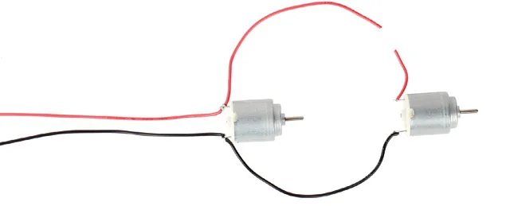
As a general rule for this book, motors should be wired only in parallel. In fact, all the bots you’ll build that use two or more motors are wired in parallel. Sometimes they have a switch wired in series to one or both of the parallel motors. This allows the switches to turn on or off one or both motors. You’ll learn more about motors in the next chapter.
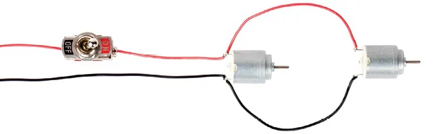